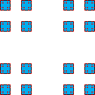

| We select squares of side lengths 1/3, 1/9,
1/27, ... , 1/3n, ... noting the scaling
of the Cantor set. |
|
|
 |
|
|
| N(1/3) = 2⋅2 |
|
N(1/32) = 22⋅22 |
|
N(1/33) = 23⋅23 |
|
| and in general |
| N(1/3n) = 2n⋅2n = 4n |
| |
| Knowing N(1/3n) we can compute the box-counting dimension: |
| d | = limn→∞Log(N(1/3n)) / Log(1/(1/3n)) |
| = limn→∞Log(4n) / Log(3n) |
| = Log(4) / Log(3) = 2⋅Log(2) / Log(3) |
|